Все о кофе
Интересные факты
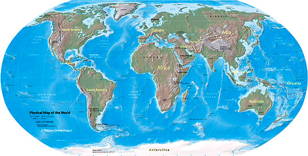- 65 стран в мире выращивают кофе, все они расположены в тропиках вдоль экватора.
- Крупнейшая страна-производитель кофе – Бразилия, на её долю приходится около 40% мирового производства кофе.
- Первая кофейня открылась в Венеции в 1654 году, в то время как кофе был доступен в Европе уже в 1608 году, в основном для богатых.
- В 1675 году король Англии Карл II издал указ о запрете кофеен, мотивируя это тем, что люди собираются в них для подготовки заговора против него.
- Плоды кофейного дерева - кофейные бобы являются ягодами. Каждая ягода содержит два боба (кофейные зёрна).
- Одно кофейное дерево даёт около 0,5 кг обжаренного кофе в год.
- Для приготовления 1кг жареного кофе требуется 4000-5000 кофейных зёрен.
- Срок жизни кофейного дерева 60-70 лет, что сопоставимо с продолжительностью жизни человека.
- Ежедневно в мире выпивается около 2,25 миллиардов чашек кофе, что делает его самым популярным напитком в мире.
- Кофеин, содержащийся в кофе, усиливает влияние некоторых болеутоляющих, особенно аспирина и парацетамола.
- Объём самой большой чашки кофе, зарегистрированной в книге рекордов Гиннеса, составляет 7608.68 литров.
Словарь терминологий
Бариста - итальянское слово, характеризующее специалиста высокой квалификации по приготовлению кофе и других напитков, где доминантной составляющей является кофе. Бариста (бармен) – эксперт по всем вопросам, связанными с кофе и не только.
Экстракция - процесс прохождения горячей воды через молотый кофе в холдере под давлением, которое в свою очередь экстрагирует аромат, масла, коллоиды, липиды и другие элементы в кофейную чашку. Процесс извлечения вкусо-ароматических веществ из правильных кофейных зёрен.
Питчер (молочник) - инструмент бариста для взбивания молока под паром.
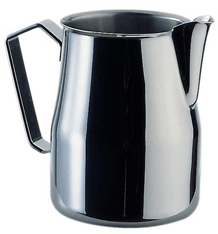Холдер (портафильтр) - устройство состоит из фильтра для молотого кофе, ручки и направляющих для струек эспрессо, с помощью пазов быстро и надежно присоединяется к головке группы эспрессо машины. На дорогих машинах портафильтр делается из латуни или меди и покрывается хромом.
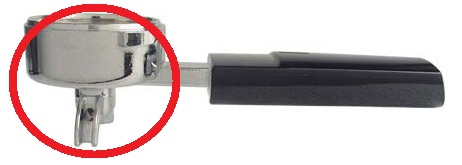Корзина-фильтр - гладкодонная металлическая вставка в портафильтре с большим количеством маленьких отверстий.
Темпер - инструмент бариста для ручной трамбовки молотого кофе в портафильтре.
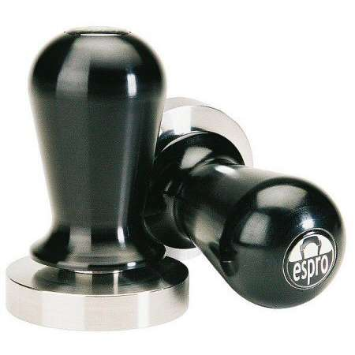Трамбовка (темпинг) - прессовка молотого кофе в портафильтре с помощью темпера.
Кремá (cremá) - один из признаков того, что эспрессо приготовлен правильно. Плотная, светло-коричневая пенка на поверхности напитка – эспрессо.
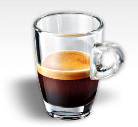Мармит – поверхность для подогрева.
Латте-арт - искусство вспенивания молока с последующим переливанием в кофейную чашку с целью создания неповторимых узоров на поверхности напитка с применением питчера. Владение элементами латте-арт подтверждают квалификацию бариста.
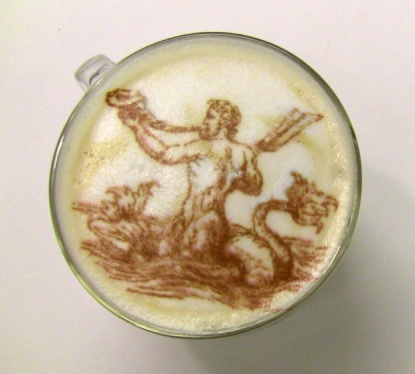Эспрессо - кофейный напиток, приготовленный с помощью эспрессо-машины. Этим итальянским словом можно описать напиток, созданный из 7 г. молотого кофе, в объёме 30 мл. под давлением в 9 Бар, при температуре 86 – 93˚С, с временем экстракции около 30 сек.
Путь от произрастания к чашке
Кофейное дерево

Кофе (Coffea), род вечнозеленых кустарников или мелких деревьев семейства мареновых. Насчитывает несколько десятков видов, но только три кофейных дерева: аравийское (C. arabica), либерийское (C. liberica) и мощное (C. robusta) - дают экспортную продукцию кофейных зерен, идущих на приготовление популярного тонизирующего напитка кофе.
Арабика
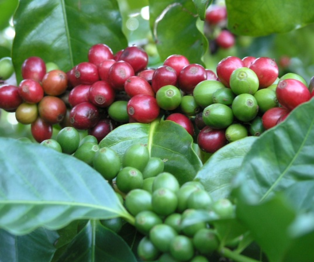Основная часть кофейных зерен на мировом рынке - семена кофейного дерева аравийского (арабика).
Это кустарник или дерево высотой 4,5-6 м из тропиков Азии и Африки. В культуре его обрезают до высоты 1,8-2,7 м для облегчения сбора урожая. Кора тонкая, серая, темно-зеленая, глянцевая. Ароматные белые цветки, похожие на цветки жасмина, собраны группами в пазухах листьев. Плоды - эллиптические ягоды красного или фиолетово-синего цвета с тонким слоем липкой, сочной, сладкой мякоти и двумя семенами, прилежащими друг к другу своими плоскими сторонами. Они покрыты тонкой серебристой кожурой и пергаментной оболочкой: эти покровы вместе с мякотью удаляют перед обжариванием семян.
Красивые по форме зёрна, как правило, имеют продолговатую форму, гладкую поверхность, слегка изогнутую в форме буквы «S» линию, в которой обычно после лёгкой обжарки остаются невыгоревшие частицы кофейной ягоды.
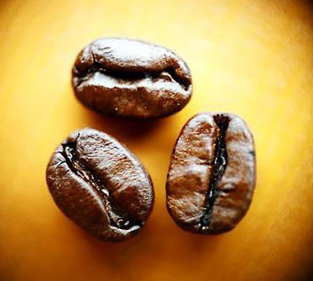 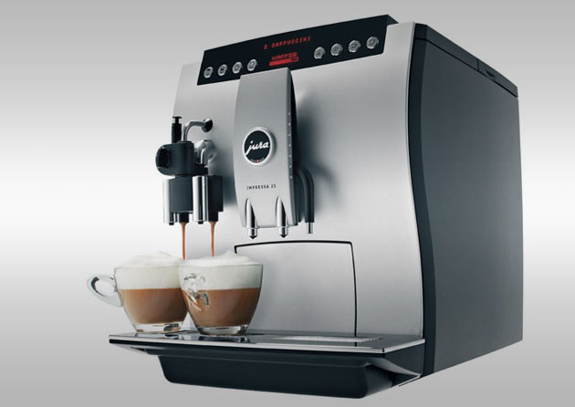Содержание кофеина в кофейных зернах арабики отличается. В целом, содержание кофеина в зернах арабики зависит от того, где расположена плантация. То есть, от высоты плантации над уровнем моря, от приближенности ее к экватору, от состава почвы. Например, кофе, собранный с горных плантаций, содержит в два раза меньше кофеина, чем кофе из "долин".
Робуста
Робуста (в переводе здоровый, крепкий, сильный) — это второй по распространенности вид кофе, который, впрочем, пользуется высоким спросом, несмотря на то, что его вкусовые и ароматические характеристики заметно уступают признанному лидеру, арабике, плоды являются округлыми и сравнительно небольшими, однако это во многом зависит от места и условий роста для конкретного дерева.
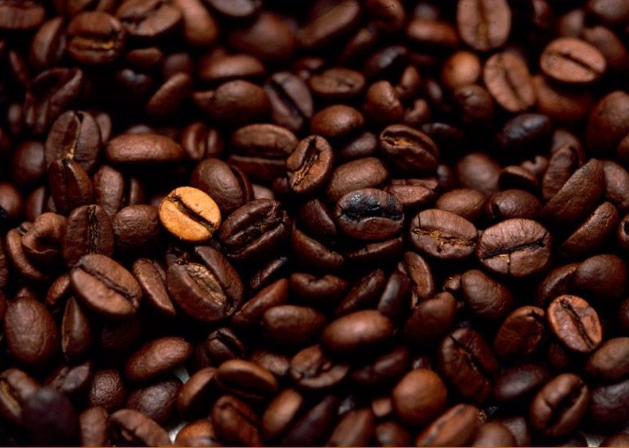- Так, если арабика обладает нежным и мягким вкусом, то робуста более груба, ее даже можно назвать острой.
- Если арабика дает немного маслянистый и густой напиток, то кофе из чистой робусты покажется водянистым.
- Если арабика немного кислит, что становится приятным дополнением к кофейному вкусу, то робуста дает горечь, которая способна просто «убить» кофейный купаж.
Тем не менее, у робусты есть важное достоинство, которое и обеспечивает ей почетное, второе место на мировом рынке — этот кофе является очень крепким, в нем содержится от 1 до 2,5%.
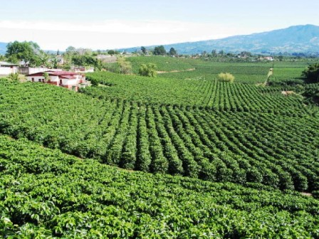Также данный кофейный вид не так прихотлив, как его собрат, арабика: не имеет значения климат, состав почвы, расположение плантации или то, насколько сильными будут колебания температуры, деревья устойчивы к болезням и не поражаются вредителями. Соответственно, плантации оказываются нетребовательными в уходе, а разведение кофе не требует применения сложных технологий.
Именно поэтому горные плантации, расположенные на большой высоте, как правило, заняты арабикой — менее прихотливую робусту здесь просто невыгодно выращивать.
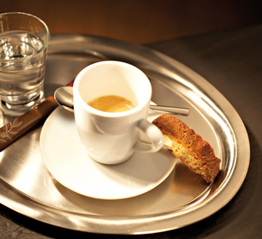Сегодня робуста входит в большинство кофейных смесей, причем именно ее использование нередко дарит кофе крепость, а также терпкие, чуть горьковатые нотки, которые высоко ценятся гурманами.
Либерика
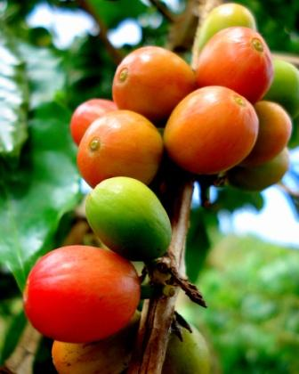Получают кофе либерика из плодов кофейных деревьев высотой 6-10 метров с очень крупными листьями. Длина кофейного плода – 30-35 мм, ширина - 10-15 мм. Именно из этого вида делается самый дорогой кофе в мире – дикий Копи Лювак (Индонезия, Филиппины, Индия).
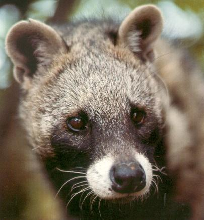«Копи Лювак» (индонез. kopi luwak) — разновидность кофе, известного, прежде всего, благодаря специфическому способу обработки. Слово «копи» на индонезийском диалекте малайского языка означает «кофе», а слово «лувак» — местное название мусанга (циветта) — небольшого зверька семейства виверровых.
Процесс производства зёрен кофе «Копи Лювак» состоит в том, что мусанги поедают спелые плоды кофейного дерева, переваривают окружающую кофейные зёрна мякоть и экскретируют зёрнышки кофе, которые затем собираются людьми, моются и сушатся на солнце.
Однако в настоящее время этот вид кофе нередко производится в промышленных масштабах на специальных зверофермах. Зверьки на таких зверофермах содержатся в клетках и лишены возможности свободно передвигаться по веткам в поисках лучших кофейных ягод. Очевидно, в неволе мусанги не могут выбирать самые спелые ягоды и вынуждены есть то, чем их кормит персонал.
Также в условиях ферм пищевой рацион мусанги отличается от естественного, что, возможно, отражается и на вкусе напитка.
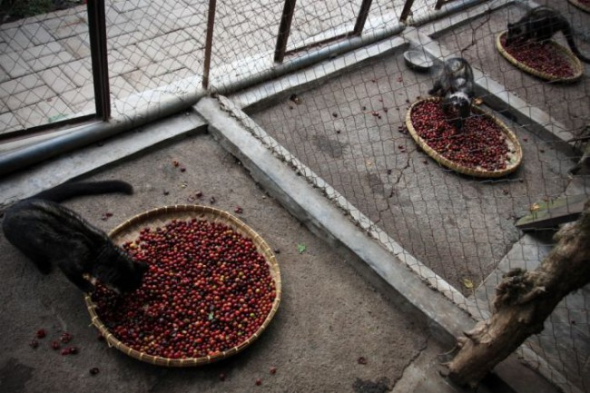 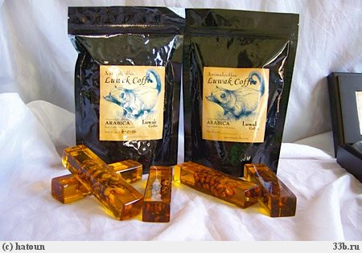Эксцельза
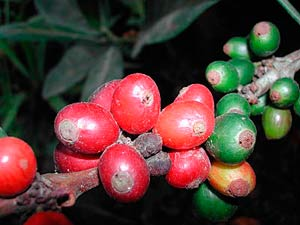Эксцельза — это один из четырех основных видов кофе, наименее распространенный, не имеющий промышленного значения и использующийся в основном в составе элитных кофейных купажей для усиления аромата напитка.
Нередко эксцельзу называют «высоким кофе», что связано с «родословной» этого растения. Эксцельза является одной из разновидностей сорта Кофе Высокий, который, в свою очередь, получил такое название благодаря тому, что высота его ствола может достигать 20 метров.
Сорт не имеет промышленного значения, потому, что его плодоношение является неустойчивым и не постоянным — спрогнозировать урожай эксцельзы очень сложно. В то же время плоды этого вида ценятся довольно высоко — они похожи на плоды арабики, являются довольно крупными и имеют оригинальный, необычный аромат. Именно из-за этого аромата эксцельза нередко используются в элитных кофейных смесях для того, чтобы получить дополнительные вкусовые оттенки.
Возделывание
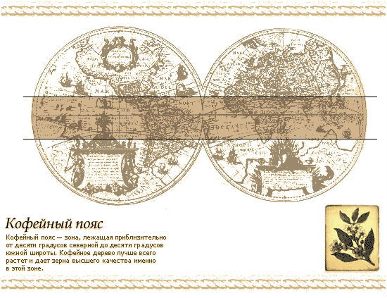"Кофейный пояс" соответствует полосе шириной примерно 10° с каждой стороны экватора и распространяется от 0 до 1520-1830 м над уровнем моря. Кофейное дерево лучше всего растет и дает зерна высшего качества при среднегодовой температуре 20° С и годовой норме осадков 1000-1800 мм.
Выращенные из отборных семян растения начинают плодоносить в пятилетнем возрасте, а наилучший урожай дают в 8-15 лет. Каждое дерево приносит в год 0,45-3,6 (в исключительных случаях до 5,4) кг зерен. Некоторые экземпляры продолжают плодоносить до столетнего возраста.
Сбор урожая
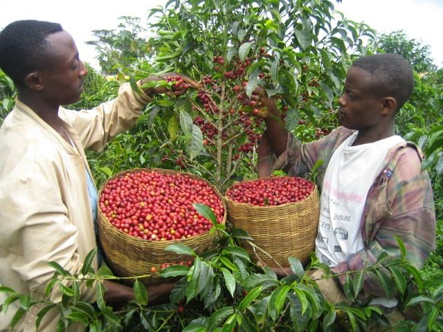Плоды кофейного дерева собирают вручную: прочесывая ветки специальным гребнем или ощипывая по одной ягоде. Время и синхронность их созревания зависят от температуры.
В Бразилии сбор урожая иногда продолжается с мая по сентябрь. От доступности воды зависит, "сухим" или "мокрым" методом очищают зерна.
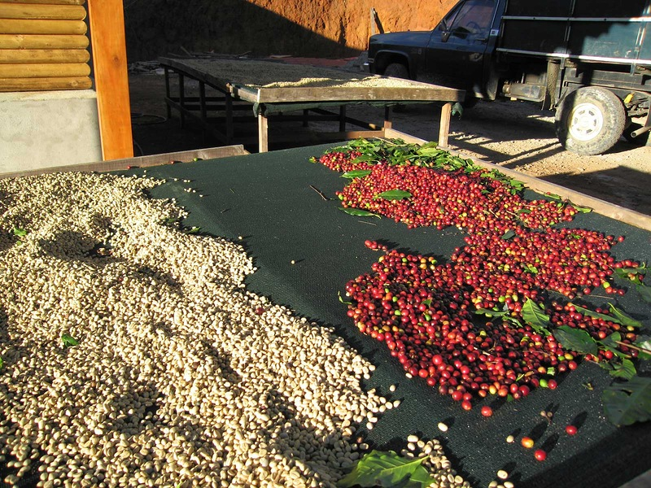Экономически предпочтительнее второй из них: плоды замачивают на ночь в баках, а затем направляют вместе с водой на механизированную "обдирку" трением. После этого в других баках проводят ферментацию остатков слизистой мякоти и смывают их. Зерна, еще покрытые пергаментной оболочкой, сушат 10 дней на солнце (унося на ночь в помещение) или 24 ч горячим воздухом (это позволяет лучше контролировать процесс). Затем трением отшелушивают пергаментную и серебристую оболочки и сортируют зерна по размеру.
Обжарка кофе
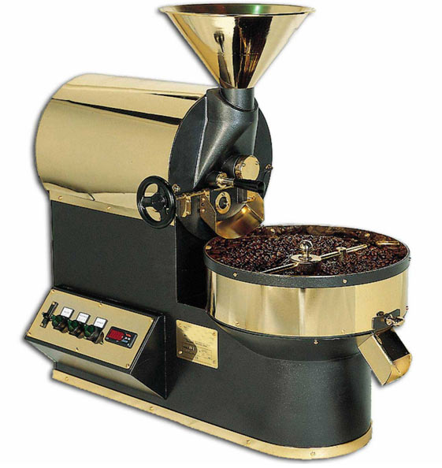Это одна из важнейших стадий на пути превращения зерен в ароматный и бодрящий напиток. В процессе обжарки сахар, крахмалы и жиры внутри кофейного зерна эмульгируются, карамелизуются и выделяют кофейные масла. Именно эти масла придают кофе его особый вкус и аромат.
Как правило, сырые кофейные зёрна обжариваются в огромных аппаратах (РОСТЕРах) – цилиндрических или барабанных печах для обжарки, при температуре около 195-250 градусов Цельсия.
Кофе в зернах перемещается в горизонтально вращающийся барабан, который подогревается газом, электричеством или древесиной. Когда достигается требуемая степень обжарки, кофейные зёрна высыпаются из барабана в охлаждающий бункер – это предотвращает их пережаривание.
Ростер для обжарки кофе
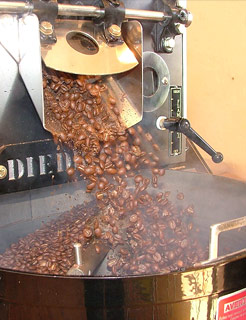Охлаждающий бункер представляет собой круг с вращающейся рукояткой, оснащенной лопастями, которая перемешивает кофе в зернах. Эта рукоятка может также быть дополнена пульверизатором с холодной водой или воздухом для более быстрого охлаждения. Воздушное охлаждение считают более эффективным методом, по сравнению с водяным.
В процессе обжаривания кофейное зерно разбухает и увеличивается в размере приблизительно на 50%.
Слегка обжаренное кофе в зернах приобретает различные цветовые оттенки от цвета корицы до лёгкого шоколадного “загара”.
Степени обжарки кофе
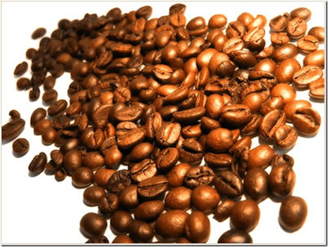На протяжении столетий сложились различные стили обжаривания кофе. В зависимости от происхождения зерен и места обжаривания возникли такие из них, как американский, испанский, греческий, венский, восточный, итальянский и т. д.
Эти классические названия стилей означают не только степень обжаривания зерен, но и говорят о происхождении кофе. Например, характерное название «итальянский кофе» обозначает смесь кофе Арабика из Колумбии и Робусты из Африки, обжаренную по-итальянски.
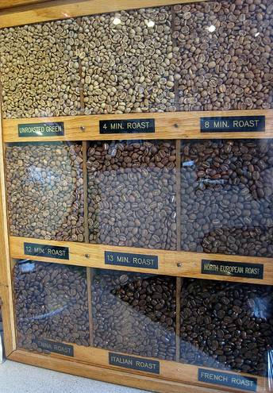Каждый дегустатор по-разному подходит к понятиям «сильно» и «слабо» обжаренный кофе. Поэтому была достигнута договоренность о том, что зерна, обжаренные французским, итальянским, испанским и кубинским методами, всегда темного цвета и блестящие. Зерна же слабой и средней обжарки, всегда матовые, коричневого, янтарного, светло-коричневого и шоколадного цветов.
Существует несколько степеней обжаривания зерен. В зависимости от стран и фирм-производителей кофе, они имеют различные названия и характеристики. Тем не менее, можно выделить ряд самых распространенных степеней обжаривания, с которыми приходится чаше всего сталкиваться.
Степени обжарки
Слабообжаренный кофе
Вкус: явно различаются кислые тона.
Для его получения применяют обжарки:
- Новая Английская обжарка;
- Коричная обжарка *.
* Сама корица никакого отношения к поджариванию не имеет: для обозначения стиля слабообжаренного кофе используется лишь ее цвет.
При этом поверхность зерна приобретает светло-коричневый цвет. Оно становится сухим. Подходит для мягких зерен, поскольку позволяет полностью проявиться тонкому вкусу и аромату.Рекомендуется для кофе, который пьют за завтраком, потому что хорошо сочетается с молоком.
Среднеобжаренный кофе
Вкус: более сильный, богатый, кисло-сладкий.
Это обычная степень обжаривания, для его получения применяют обжарки:
- Американская обжарка;
- Регулярная обжарка;
- Средняя обжарка.
Зерно имеет темноватый цвет и сухую маслянистую поверхность. В результате получается кофе, который можно пить в любое время дня, с молоком или без.
Сильнообжаренный кофе
Вкус: менее кислый, чем у среднепрожаренного кофе.
Для его получения применяют обжарки:
- Обжарка Сити;
- Обжарка Фул Сити;
- Венская обжарка **;
** Венскому стилю обжаривания трудно дать однозначную характеристику, поскольку в Вене существует несколько стилей обжаривания, все они объединены термином «венский». Часто это смесь, содержащая зерна, обжаренные в стиле Фул Сити (две трети среднеобжаренного кофе) и Французском (одна треть сильнообжаренного кофе), слабый французский, бархатный стили обжаривания.
При таком обжаривании зерна выдерживаются на огне немного дольше, чем при среднем обжаривании. Зерна темно-коричневые, на их поверхности можно различить слабые следы маслянистости. При заваривании получается темный напиток.
Высшая степень обжариваниpя
Вкус: горький и очень выразительный, чуть «паленый» и приятный.
В эту категорию обжаренного кофе можно включить довольно широкий круг различных стилей обжаривания, в том числе:
- Французская обжарка;
- Итальянская обжарка;
- Испанская обжарка;
- Европейская обжарка;
- Континентальная обжарка;
- Двойное прожаривание,
При этой степени обжаривания зерна имеют темно-коричневый цвет и маслянистую поверхность, причем темно-коричневый цвет зачастую переходит в черно-коричневый, напоминающий обгорелый. Такой кофе пьют черным, со сливками, за обедом или во второй половине дня, и называется он — послеобеденный. Идеально для приготовления эспрессо и ристретто.
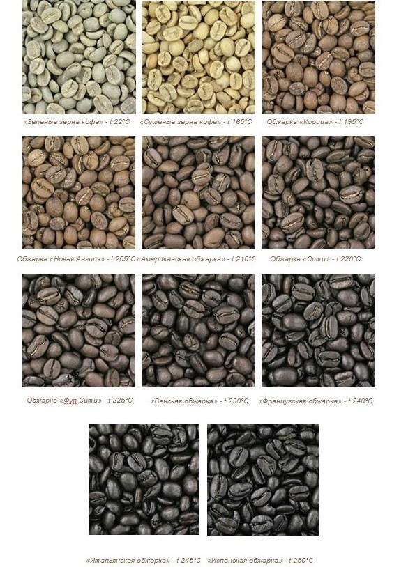Помол
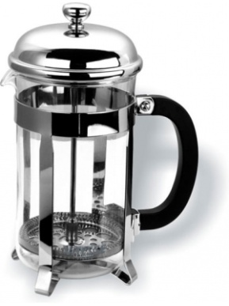Как и обжаривание, размалывание кофе – важный этап для выявления аромата масел, содержащихся в зернах. С того времени, как зерна размолоты, этот аромат и вкусовые качества начинают теряться, поэтому важно заваривать кофе сразу же после размалывания (не более 15-20 минут).
Грубый помол (coarse Percolator)
Это крупный помол с частицами размером до 0,8 мм. Хорошо подходит для заваривания кофе в поршневой кофеварке (кофейный пресс).
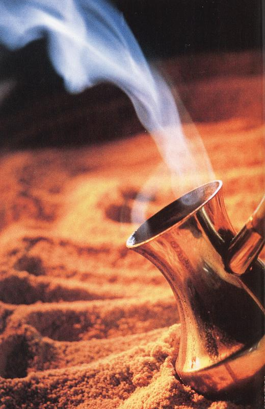Средний помол (medium Plunger)
Это очень удобный вид помола, т.к. его можно использовать для многих способов заваривания, включая эспрессо.
Тонкий помол (fine Filter)
Используется для приготовления напитка в капельных кофеварках с фильтрами.
Тонкий помол для эспрессо (Extra Fine Espresso)
Идеально подходит для приготовления эспрессо.
Порошковый помол (Super Fine - Turkish)
Сверхтонкий помол, похож на муку. Хорошо подходит для варки настоящего турецкого кофе.
Виды кофемолок
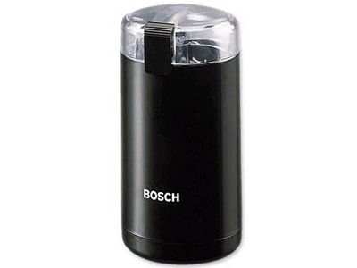Имеются два вида кофемолок, разные по своим конструктивным качествам и разные по уровню цены. Фундаментальное техническое различие между двумя видами кофемолок состоит в типе используемых лезвий и скорости их вращения.
В кофемолке с плоскими лезвиями нижняя часть закреплена на вращающийся вал электромотора и имеет такую же скорость вращения, что и сам мотор (18000 - 24000 оборотов в минуту), в то время как верхняя часть остается неподвижной.
Кофемолка с коническими лезвиями.
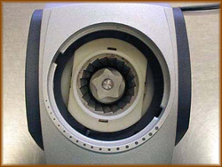Отличие данной системы от предыдущей состоит в иной форме лезвий и в меньшей скорости вращения.
У жерновой кофемолки внутреннее лезвие закреплено на вращающийся вал электромотора и его форма отдаленно напоминает стакан средней величины, на внешнюю поверхность которого нанесены спиралеобразные насечки.
Внешнее стальное лезвие имеет такие же насечки: расстояние между двумя лезвиями регулируется для получения гранул нужного размера.
Скорость вращения лезвий ниже, чем у кофемолки с плоскими лезвиями: 400-500 оборотов, а не 18000 - 24000, поэтому кофемолка с коническими лезвиями меньше перегревается, что позволяет смолоть больший объем зерен, не прерывая работу.
Хранение кофе
При покупке кофемашины у нас, вы получите пятикилограммовое ведро кофе – в подарок !!!
Данную фразу можно услышать от продавцов кофейных аппаратов. Давайте разберемся, выгодно ли это, и какое качество у этого кофе?
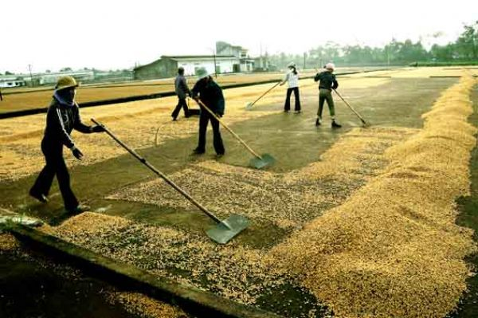Чтобы кофе не терял присущих ему вкусо-ароматических свойств, важно правильно его хранить. При этом большое значение имеют не только срок, но и тара, в которую упакован продукт.
Свежесобранные плоды не оставляют в сыром виде, а сразу начинают сушить или обрабатывать, причем для получения элитных сортов напитка очистить зерна от мякоти необходимо уже в первые часы после уборки урожая.
Прошедшие первичную обработку бобы могут храниться от двух до пяти лет, однако по истечении этого периода становятся непригодными к дальнейшему использованию, а при неправильном хранении – и раньше.
Вкус и аромат обжаренного кофе на воздухе сохраняются лишь в течение нескольких дней. Это объясняется тем, что кофе — это продукт очень гигроскопичный (в процессе обжарки увеличивается в объеме и становится очень пористым), а значит, способен поглощать из окружающей среды посторонние запахи и влагу. При несоблюдении условий хранения кофе приобретает посторонние вкус и запах.
Потеря аромата в молотом кофе в 50 раз выше, чем в зерне!
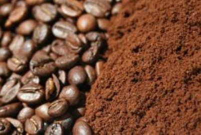Что касается обжаренного молотого кофе, то его срок хранения очень мал – всего несколько минут (до 15-30 мин).
Объясняется это тем, что он с поразительной легкостью поглощает из внешней среды влагу и посторонние запахи, его естественный аромат при этом бесследно исчезает, а происходящее на воздухе разложение белковых соединений придает продукту характерный неприятный прогорклый привкус.
Это, кстати, важный минус кофемашин с предварительным помолом!
Именно по этой причине в продаже находится меньше молотого кофе, чем кофе в зёрнах. Дело в том, что молотый кофе быстро теряет свои вкусовые качества, и запасать его не имеет никакого смысла.
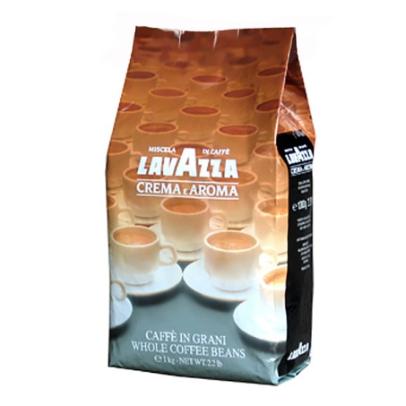Лучше всего кофе хранить в вакуумных упаковках. В такой упаковке кофе сохраняет свой вкус и надёжно защищён от кислорода, ухудшающего его вкусовые качества.
Пока вы не вскрыли пакет, он может храниться до года максимум!
Банки с кофе желательно хранить подальше от приправ, имеющих сильный аромат, т.к. кофе легко впитывает посторонние запахи.
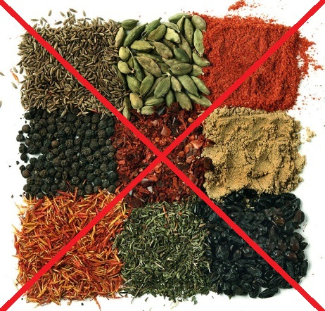Национальный институт итальянского эспрессо
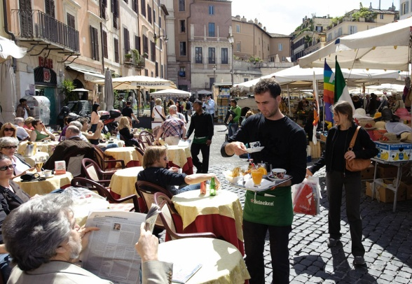17 апреля, по всей Италии отмечают праздник всеми любимого ароматного напитка - День кофе "Эспрессо" (Espresso Italiano Day). В этот день в кафе, ресторанах и барах по всей стране раздают под миллион листовок про правильный эспрессо и капучино.
Организатором этого праздника выступает Национальный Институт Итальянского Эспрессо.
Эта организация ставит перед собой задачу выработки стандартов истинного эспрессо, осуществления жесткого контроля за продукцией итальянских производителей кофе, во избежание деградации эталона «эспрессо».
Большое значение, согласно Сертификату Эспрессо Итальяно, имеет посуда, в которой подается кофейный напиток. В идеале для эспрессо («ристретто», «нормале» и «лунго») используется белая чашка (ДЕМИТАССЕ) из толстостенного фарфора, покрытая стойкой эмалью, вместительностью 75 мл. Именно такая чашечка, за счет большой теплоемкости и уникальной формы, дает возможность по достоинству оценить вкус и аромат эспрессо.
Несмотря на то, что чашка вмещает 75 мл напитка, максимальное наполнение, по Сертификату, 50 мл. Это и есть «лунго», «нормале» — 30 мл , «ристретто» — 20 мл.
Еще один важный момент — в кофейной смеси не должно быть ароматизаторов!
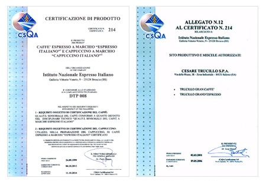 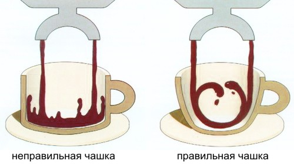А вообще, чтобы смело заявить, что Вы лично пробовали итальянский эспрессо, необходимо знать, что бар или ресторан, в котором Вы дегустировали этот напиток, работает под маркой Сертификата Эспрессо Итальяно.
К заведениям, держащим такой уровень, предъявляются особые требования.
Кофейные напитки
Espresso
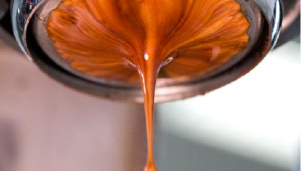 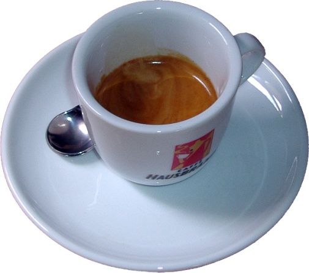Материал чашек эспрессо – фарфор
- Количество кофе: 7 гр.
- Помол: мелкий (тонкий)
- Давление воды: 9 бар
- Температура заваривания: 86 – 93°C
- Количество воды: 30 мл.
Температура приготовления эспрессо. Температура воды при заваривании важна не меньше, чем давление. Оптимально 86 – 93°С.
Чем больше в кофе ароматических веществ (высокогорная арабика), тем выше нужна температура.
Использование большей температуры, негативно скажется на итоговом результате!
Тонкость помола эспрессо выставляется таким образом, чтобы эспрессо объёмом 30мл. наливался за 20-30 секунд (1 мл/сек). Соотношение правильного помола, правильной темперовки (упрессовывания молотого кофе в холдере), правильной температуры воды и её стабильности — залог правильного приготовления.
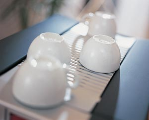Чем мельче помол, тем бóльшая растворимость находящихся в кофе веществ, тем насыщеннее и ароматнее напиток!
Подготовка кофемашины для эспрессо. Перед завариванием кофе желательно прогреть кофемашину. Дождаться, пока вода нагреется и пропустить по системе горячую воду. То есть слить 1- 2 чашки воды без кофе.
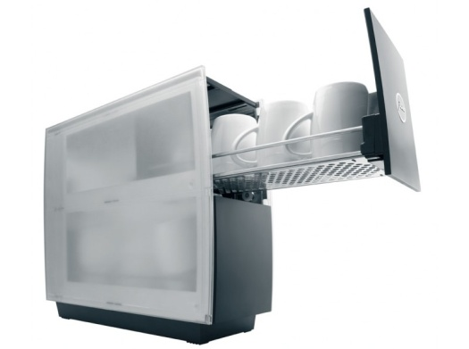В прогретой кофемашине эспрессо получается намного лучше!
Подготовка чашек для эспрессо.
Чтобы правильно приготовленный кофе не потерял свой неповторимый вкус и аромат, его следует подавать только в подогретой посуде (40-50°C) . Самый простой и удобный способ решения этой проблемы − это использование специального устройства для подогрева чашек (мармит).
Оно может быть либо встроенным в кофе-аппарат, либо представлять собой дополнительное оборудование.
Эспрессо лунго (Espresso lungo, по-итальянски lungo – длинный)
Это обычный эспрессо, разведенный до объема 50 – 95 мл. Подается в больших чашках, объемом около 150 мл.

Эспрессо доппио (Espresso doppio) – это двойной эспрессо (doppio – двойной).
Для приготовления эспрессо доппио используется в два раза большее количество молотого кофе. Объем готового напитка - 50-60 мл.
Эспрессо ристретто (Espresso ristretto) – на обычную порцию кофе для эспрессо берется меньшее количество воды, около 20 мл. Самая полезная дозировка (по мнению Института Эспрессо), потому что в первые 20 секунд экстрагируются все самые лучшие вещества.
Эспрессо макиато (Espresso macchiato) – это эспрессо, поверхность которого подкрашена 1 ст. ложкой взбитого молока. По-итальянски «макиато» означает пятнистый, мраморный.
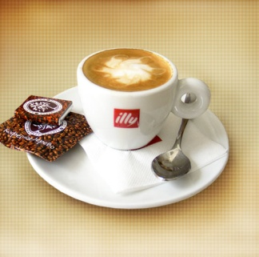Эспрессо - кон-пана - (Espresso con panna, со сливками) — эспрессо с шапкой из взбитых сливок
Эспрессо романо - (Espresso romano, т.е. по-римски) – обычный эспрессо с кусочком лимонной корочки.
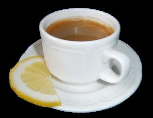Эспрессо коретто - (Еspresso coretto в переводе означает «приправленный») – эспрессо, в который добавляют ликер или водку. В Италии часто добавляют граппу (виноградная водка).
Капучино (Cappuccino)
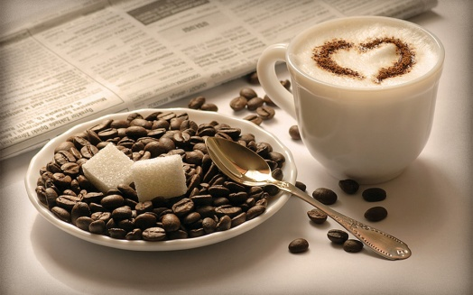Стандартной порцией капучино считается 145-155 миллилитров. Подается в демитассе объёмом 150 мл. Молочная пена на вершине напитка действует как изолятор и помогает сохранить высокую температуру дольше.
- Налейте в питчер не больше, чем треть, холодного некипяченого молока. Взбейте молоко пароотводом. Для этого прогрейте молоко, дайте пене подняться, но не доводите молоко до кипения.
- Приготовьте эспрессо 30 мл в прогретый демитассе объемом 150 мл.
- Влейте молоко в кофе. Направьте струю молока в центр чашки. Правильно взбитая молочная пена для капучино выливается в чашку вместе с молоком. Она имеет густую, однородную, сцепленную с молоком консистенцию. Легкими движениями сформируйте молоком концентрические окружности.
Этот стандарт капучино в настоящее время действует на Мировом Чемпионате Бариста, который во всем мире признан эталоном кофейной культуры.
Большинство любителей кофе подразумевают под названием "Латте (Latte)" трёхслойный напиток, подаваемый в высоком прозрачном бокале. В действительности этот напиток называется Ла́тте макиа́то (Latte Macchiato).
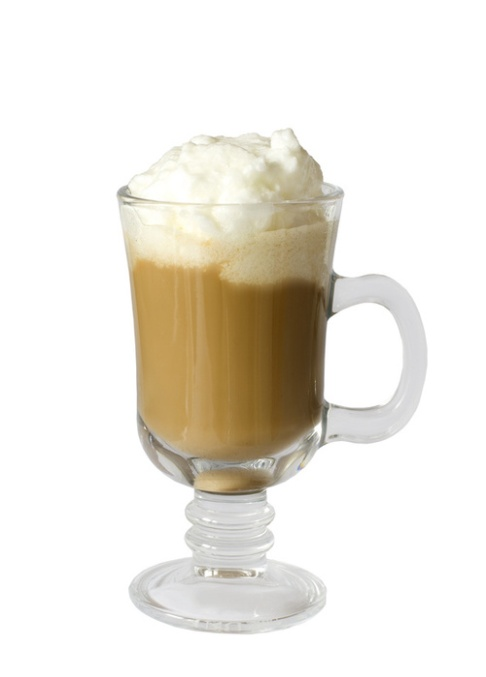Латте - (Latte)
По классическому рецепту делается так:
- Влейте молоко в кофе.
- На поверхность выложите ложку взбитой молочной пены.
- Подается в высоком стакане или большой чашке.
Латте - Арт (Latte Art)
Вливание вспененного молока в кофе
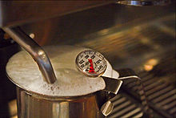 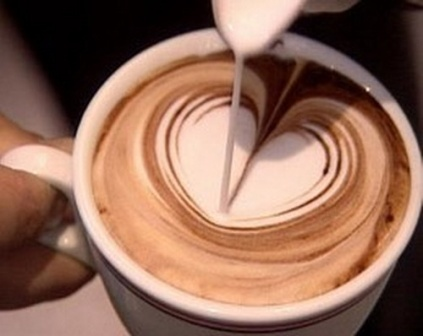 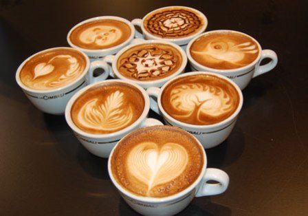Классический итальянский латте-арт (от ит. «лáтте» − молоко, «арт» − искусство) основан на специальной технике вливания вспененного молока в эспрессо при приготовлении латте или капучино. Базовые фигуры для этого искусства три: «цветок», «яблоко» и «сердечко». Все остальные рисунки производятся на их основе. Умение рисовать молоком на эспрессо считается сегодня одним из главных показателей мастерства бариста.
Чемпионаты начали проводиться с 2004 года. На этих чемпионатах профессионалы со всего мира демонстрируют свои умения. По условиям конкурса участникам нужно за 15 минут приготовить 4 чашки капучино, 4 эспрессо и 4 авторских напитка.
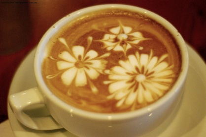Признаком наивысшего мастерства бариста считается рисунок из нескольких фигур в одной чашке. Мировой рекорд на сегодняшний день составляют 7 роз в 150 миллилитровой чашке капучино. Кроме этого, на конкурсе приветствуется рисование «вслепую», а также умение нанести одинаковый рисунок в нескольких чашках (мировой рекорд на сегодняшний день - 6 чашек).
Латте Макиато (итал. Latte macchiato - «запятнанное молоко») — горячий напиток, приготавливаемый путем вливания кофе в молоко
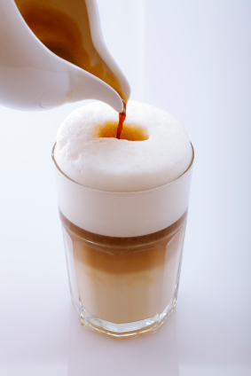Итальянское macchia обозначает маленькое пятнышко кофе, остающееся на поверхности молочной пены.
На дно высокого стакана наливается молоко и добавляется взбитая молочная пена. Затем медленно вливается сквозь пену эспрессо.
- нижний слой — молоко
- средний слой — кофе эспрессо
- верхний слой — высокая пена, взбитая из молока.
Эспрессо не смешивается с нижним молочным слоем благодаря более высокой температуре и более низкой плотности, чем у жирного молока.
В чем заключаются различия между латте и капучино?
Во-первых, в пропорциях. Для капучино характерно соотношение одной части эспрессо на одну - две части молока, а латте чаще всего содержит три части молока на одну часть кофе. Естественно, отличается и вкус.
Латте на вкус более нежный, ведь в большей части он состоит из молока и воздушной пены, а для капучино свойственен более кофейный вкус.
Вторым отличительным свойством данных напитков является пена. Для капучино готовят густую плотную пену, состоящую из мелких пузырьков. Из такой пены можно выложить настоящий купол в чашке с эспрессо. Для латте характерна воздушная легкая пенка, которая напоминает пушистые облака.
Третьей отличительной особенностью является посуда. Традиционно латте пьют в Италии из высоких стаканов или больших чашек.
Капучино обычно подается в чашечках из фарфора, ведь они дольше обычных сохраняют температуру напитка.
Немного о молоке
Молоко должно быть охлажденное и некипячёное - после кипячения взбивать бесполезно!!!
- во-первых, оно плохо взбивается, т.к. его "структура" меняется при кипячении, фактически можно считать, что его уже один раз взбили с перегревом;
- во-вторых, при взбивании и нагреве до 65-70°С молоко приобретает заметный сладкий вкус, что является существенной составляющей капучино.
При перегреве (выше 75°-80 С) сладость пропадает. В кипяченом молоке сладость уже не появится.
Для взбивания молока важна не жирность, а содержание белка. Лучше всего, когда его содержание около 3-х % и выше. Из высокобелкового молока пена получается плотной и «кремообразной», а из низкобелкового водянистой и неплотной.
Процесс взбивания состоит из двух стадий:
- Stretching (вспенивание) – увеличение объема молока (получение пены).
- Steaming (нагрев паром) – нагрев и формирование текстуры.
Вспенивание происходит только до тех пор, пока молоко холодное, температура ниже 37° С.
На первом этапе главное почувствовать положение сопла на несколько миллиметров ниже поверхности молока, при котором происходит вспенивание, сопровождаемое свистяще - шипящим звуком и вращением молока. По мере увеличения молока в объеме питчер опускается ниже, чтобы свистящий звук не прекращался.
Если продолжить первый этап после потепления молока, то пена будет сухой. Как только почувствуете рукой тепло на стенке питчера – переходите ко второй стадии.
На второй стадии опускаете сопло по стенке ниже и стараетесь, чтобы молоко в питчере вращалось (как будто его сильно вращают ложкой). Греть до тех пор, пока рукой можете "комфортно" держать за боковину, температура 65-70° C. На втором этапе важно не перегреть молоко, иначе противный кипяченый вкус и никакой сладости.
Рецепты напитков на основе эспрессо
Кофе по – ирландски (Irish coffee )
Ингредиенты: два кусочка тростникового сахара, 20-30 мл. виски ( Jameson), 90-100 мл. кофе (эспрессо+вода, американо или френч-пресс), взбитые сливки.
Способ приготовления: сахар в бокал, добавляем подогретые виски, перемеши - ваем. После, вливаем кофе до уровня 1.5-1.7 см от верхнего края. Затем, чтобы не было смешивания слоев, по ложке, выкладываем взбитые сливки.
Мокко – (Coffee Mocha)
Ингредиенты: эспрессо, топленый шоколад или какао, цельное молоко, взбитые сливки.
Способ приготовления: нагреть в стакане на пару молоко и шоколад до тех пор пока они не перемешаются. Постепенно влейте кофе. Сверху украсить взбитыми сливками и посыпать шоколадной стружкой.
Американо - (Americano Black Coffee)
Классический эспрессо, в который добавляется горячая вода. В отличие от другого кофейного напитка, лунго, в американо дополнительная вода не проходит через кофейную таблетку, а доливается уже в готовый напиток. При приготовлении американо, чтобы избежать попадания в чашку горьких веществ, необходимо сварить классический доппио эспрессо из 14-16 г кофе объемом 50-70 мл, не проваривая кофе в машине дольше 20-25 секунд! Доппио разбавляется водой, нагретой до 92 градусов в соотношении примерно 1:1. Таким образом выход готового напитка составляет 100-130 мл.
Возникновение названия
Рецепт и название "американо" придумано итальянцами в качестве оскорбления или уничижения американцев, предпочитающих традиционный американский фильтр-кофе благородному итальянскому эспрессо. Во время Второй Мировой американские солдаты в Италии в каждом баре искали "чашку Джо" (сленговое слово, часто применяется в США для определения кофе), к которой они привыкли дома. Местные бариста попытались приготовить на эспрессо-кофемашине напиток, соответствующий их ожиданиям, и таким образом изобрели совершенно новый, весьма популярный ныне напиток. Примечательно, в самих Соединенных Штатах напиток американо не был известен до появления сети кафе Старбакс (Starbucks) в 1990-ых годах.
Виды Американо
Классический итальянский американо, в эспрессо добавляют горячую воду (объем 120 мл, температура 84−92 ºС);
Способ предусматривает разбавление готового эспрессо горячей водой. При этом способе пенка на поверхности напитка разрушается полностью. Поэтому крема у американо, приготовленного таким способом, не считается показателем качества и не является обязательным.
Современный скандинавский или шведский американо, в горячую воду (объем 120 мл, температура 84−92 ºС) добавляют эспрессо;
Этот способ заключается в следующем: сначала в чашку наливается кипяток, а только потом добавляется эспрессо. Таким образом, пенка (крема) в получившемся напитке сохраняется. Чашку с горячей водой можно ставить прямо под раздаточную группу кофемашины и в нее вливать готовый эспрессо.
По всем остальным параметрам "итальянский" и "шведский" американо не отличаются между собой. Хотя многие ценители утверждают, что первый глоток напитка приготовленного шведским способом, отличается более мягким и насыщенным вкусом.
Европейская демократическая подача, горячая вода (объем 120 мл, температура 84−92 ºС) и эспрессо подаются отдельно.
В последнее время набирает популярность способ подачи американо: горячую воду в стакане (или бокале) приносят отдельно от эспрессо. Таким образом, каждый человек сам решает каким способом и в какой пропорции он будет разбавлять свой кофе.
Многим людям просто нравится вкус американо и то, что он менее крепкий, насыщенный и концентрированный, чем классический эспрессо. В эспрессо-машине невозможно сварить некрепкий кофе, и единственный способ получить подобие американского фильтр-кофе — это разбавить эспрессо водой. В действительности же, классический фильтр-кофе гораздо вкуснее и полезнее американо.
Растворимый кофе
Качество сырья
Производители растворимого кофе нас уверяют и пишут на этикетках, что для приготовления были использованы зерна кофе только высшего качества, причем, исключительно сорта "арабика" непревзойденной пробы. В то же время известно, что для производства растворимого кофе. Чаще всего, используется кофе сорта "робуста", т.к. робуста стоит в 10 раз дешевле арабики и выращивают ее не мало.
Арабику высших сортов покупают на аукционах компании специализирующиеся на обжарке кофе, т.е. компании, которые поставляют действительно натуральных кофе в зернах или молотый.
А на производство быстрорастворимого кофе идет весь тот кофе, что не удается продать для употребления на рынке натурального кофе. К тому же, в робусте в несколько раз больше кофеина и, естественно, такой кофе идеально подходит для производства растворимого аналога. Оптимальная полезная экстракция растворимых веществ из кофейного зерна составляет 19 %. А в растворимый кофе переходит чуть ли не половина, т.е. 50%!
Вот три основных способа получения растворимого кофе:
Порошковый кофе
Самый дешевый способ производства растворимого кофе – это производство порошка. Сырой кофе проходит очистку, после чего его обжаривают. Затем зерна дробят до частиц размером 1,5-2мм. Следующая технологическая операция – извлечение растворимых веществ горячей водой под давлением. Для этого мелко размолотый кофе обрабатывают 2-3 часа горячей водой под давлением 15 атмосфер. После охлаждения полученный экстракт фильтруют, удаляют нерастворимые и смолистые вещества и сушат горячим воздухом. Затем полученную порошкообразную массу охлаждают.
Агломерированный растворимый кофе – кофе в гранулах.
Гранулированный кофе – это уже не порошок, который налипает на ложку, а кофе, сбитый в мелкие комочки паром. Производственный цикл почти не отличается от производства порошка. Разница только в последнем этапе, когда порошок сбивают в гранулы паром. Следует заметить, что интенсивное давление изменяет молекулярную структуру зерна и оказывает вредное влияние на аромат и вкус кофе.
Сублимированный растворимый кофе
Сублимация (от латинского sublimatio – «возвышение, вознесение») – обезвоживание, высушивание замороженных продуктов в вакууме. Сублимационная сушка сохраняет основные биологические качества материала, т.к. при этом кислород воздуха не окисляется и не изменяется объем продукта. Сублимация позволяет получать продукты высокого качества, приближающиеся по органолептическим показателям к свежим. Это самый новый метод производства растворимого кофе. Он самый дорогой, но позволяет максимально сохранять все исходные свойства натурального кофе. Суть производства сублимированного заключается в том, что кофейный отвар замораживают ... и т.д.
Далее, после слов "отвар" можно не читать, т.к. становится ясно, что в последнем случае опять-таки многострадальный кофе варят, варят, варят и варят те же 2-3 часа и не понятно, как можно при этой варке получать продукты высокого качества, приближающиеся по органолептическим показателям к свежим. ( Для примера, эспрессо варится 25 - 30 секунд при температуре около 90 градусов и давлении 9 бар и несравненно вкуснее и полезнее растворимого кофе).
Не мудрено, что 2-3 часа варки 50% кофейного зерна просто растворяется... В общем принципиально не изменилось ни чего... Изменились только слова и термины.
Наверное, растворимый кофе стал менее вредным, но вряд ли он стал полезным!
И тем не менее рост потребления растворимого растет с каждым годом. По данным американского кофейного бюро. В 1953 г. на каждого американца в возрасте старше 10 лет приходилось 2,57 чашки кофе в день, из них 2,31 чашки готовилось из натуральных зерен, а 0,26 — из растворимого кофе. В 1972 г. эти же цифры выглядели так: 2,35 чашки, из них 1,67 натурального, 0.68 растворимого. И Россия сегодня уверенно выходит на первое место по потреблению растворимого кофе.
Тонкости кофейного этикета
- Помешав чай или кофе, не следует оставлять ложку в стакане, ее нужно положить на блюдце.
- Не принято обмакивать в напиток печенье.
- Не следует пить чай или кофе, когда находящаяся во рту пища еще не проглочена.
- Кофе пьют горячим, небольшими глотками, не производя при этом громких звуков.
- Блюдце держат в левой руке, а правой подносят чашку ко рту. Когда пьют кофе с молоком, блюдце оставляют на столе.
- Не следует манерно оттопыривать мизинец, а также просовывать палец в ушко ручки.
- Сахар к кофе при отсутствии специальных щипцов не принято брать ложкой, его нужно взять рукой и опустить в чашку.
- Кофе с ликерами, как правило, пьют уже не в столовой, а в гостиной. Дамы не спеша потягивают ликеры, мужчины - коньяк и другие крепкие алкогольные напитки. Кофе, удачно сочетаясь с алкоголем, позволяет еще больше оттенить вкус и аромат алкогольного напитка, нейтрализовать его крепость, создать изысканную вкусо-ароматическую композицию.